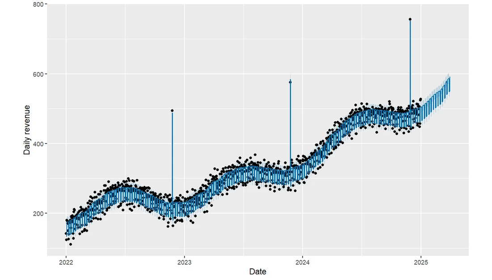
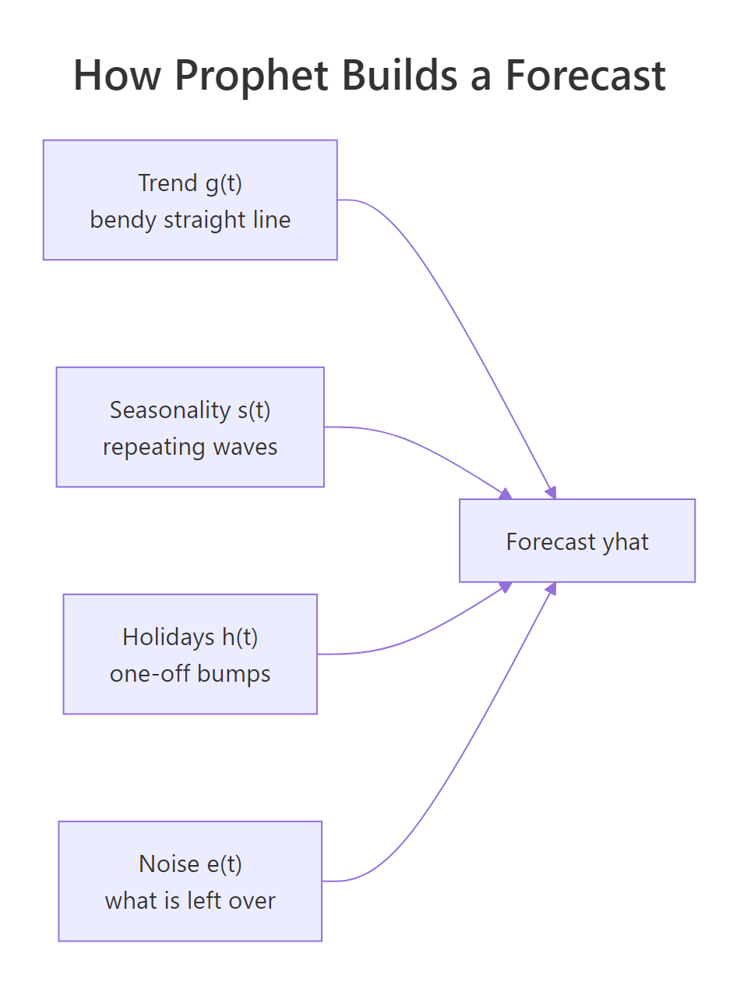
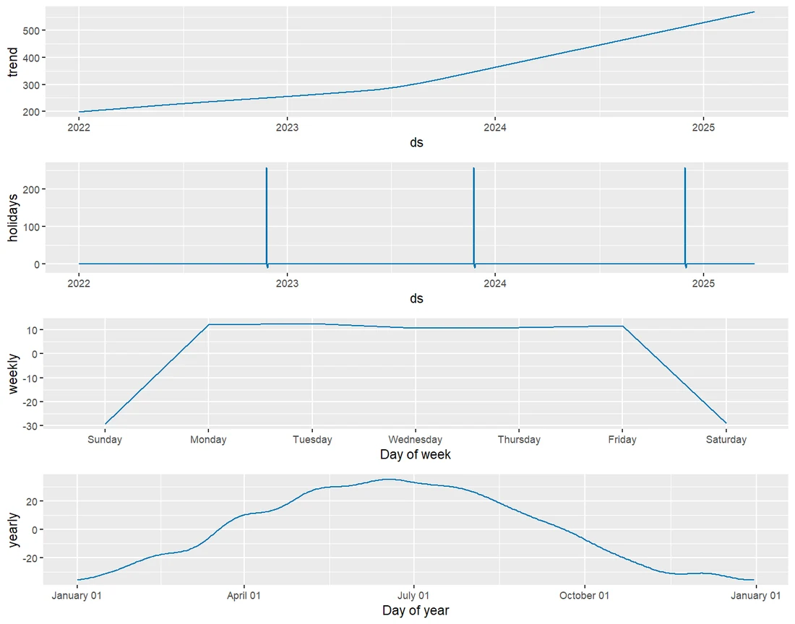
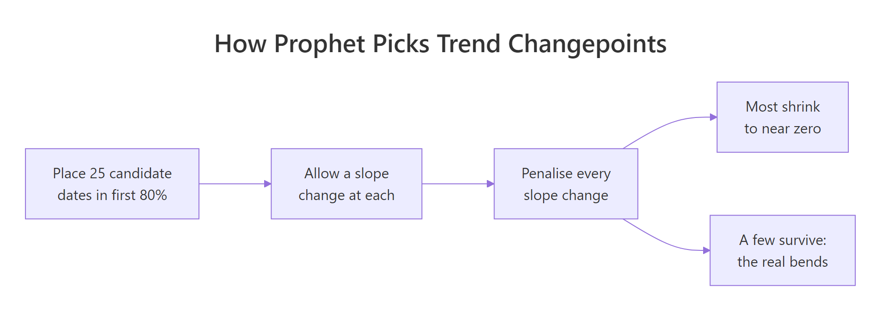
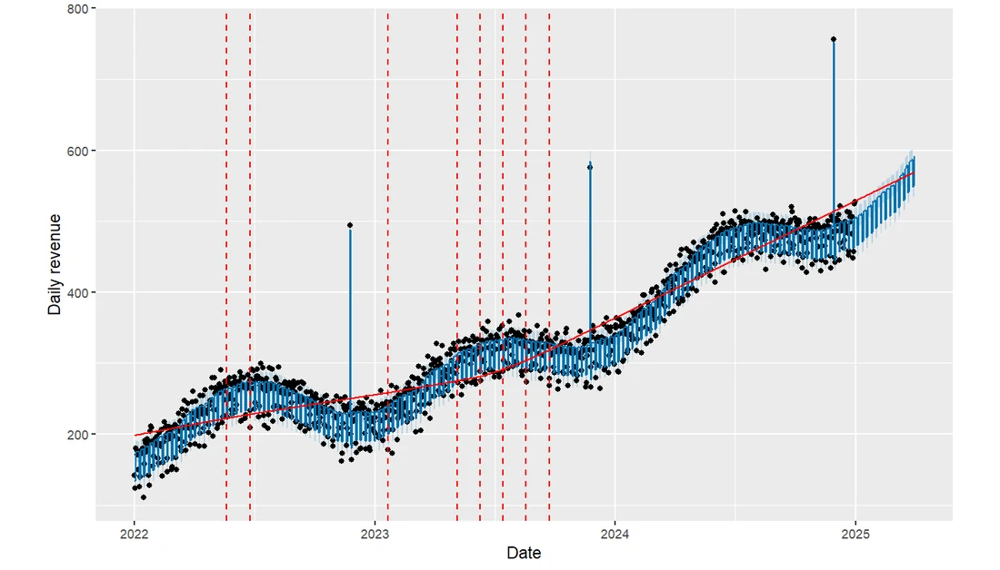
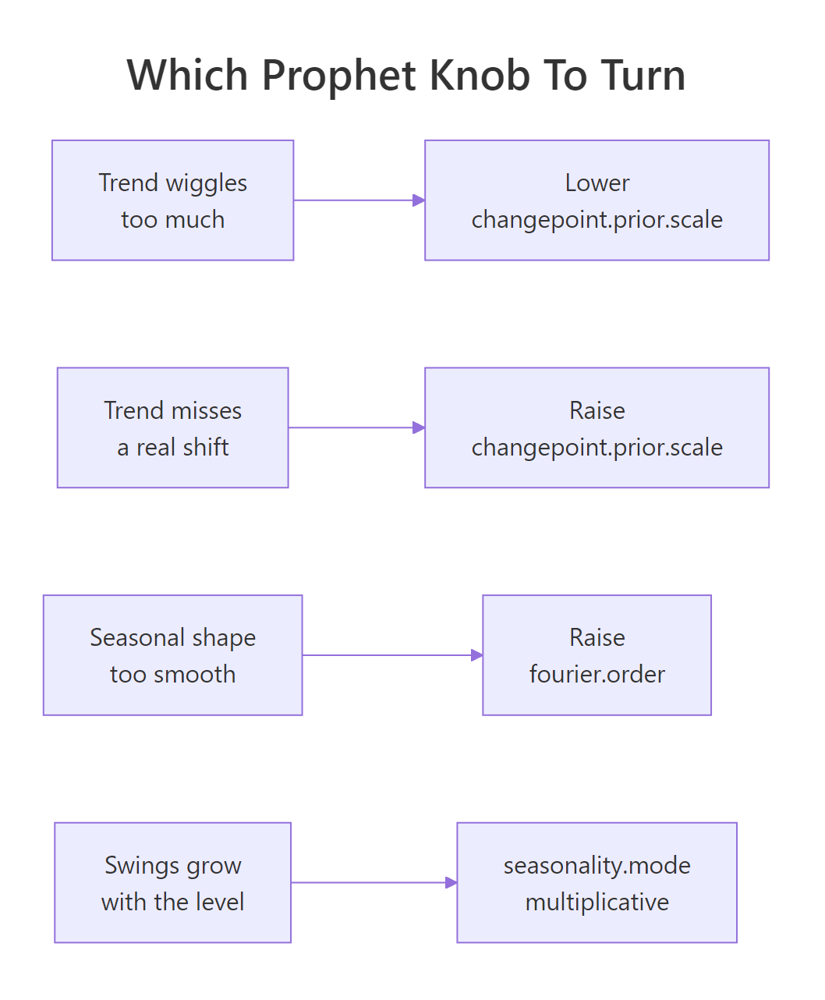

Prophet in R: Forecast with Trend, Seasonality, Holidays
Prophet is a forecasting package that treats a time series as a sum of four readable parts: a bendy trend line, repeating seasonal waves, one-off holiday bumps, and leftover noise. You hand it a two-column data frame and it hands back a dated forecast with an uncertainty band, plus the value of every part on every day. This post builds each of those parts by hand first, so that when prophet() produces them you already know what you are looking at.
What does a Prophet forecast look like in R?
Most forecasting tools give you a number and no story. Prophet gives you four numbers per day that add up to the forecast, so you can point at a spike and say "that one is Black Friday." Before we can forecast anything we need something to forecast, so the first block builds three years of daily store revenue out of parts we choose ourselves.
Building the data by hand is not a shortcut, it is the whole teaching trick. Because we decide the trend, the weekend dip, the yearly wave, and the promo spikes, we can later check whether Prophet found them. Press Run on the block below.
Read the ingredients from the top. trend starts at 200 and climbs 0.15 units a day, and the pmax(t - 550, 0) term adds another 0.30 a day but only after day 550, which is a growth spurt that starts in July 2023. weekly subtracts 30 on Saturdays and Sundays and adds 12 on weekdays. yearly is a sine wave that peaks in summer, promo adds a 260-unit spike on exactly three Black Fridays, and noise scatters everything by about 12 units.
The two column names matter more than they look. Prophet always wants a data frame with a date column called ds and a numeric column called y, and it will refuse to run if they are named anything else. That is the entire input contract.
Now look at the range of what we just built.
The median day earns about 303 and the busiest day earns 756. That maximum is one of the Black Friday spikes, sitting more than twice as high as a typical day. A forecasting model that has no way to represent one-off events will either miss those spikes or smear them across the whole November.
Seeing the shape is faster than reading six numbers, so let us plot it.
You should see three things at once. The floor drifts upward year after year. The line is fuzzy rather than clean, because weekdays and weekends sit at different heights. And three thin towers stick up in late November. Those three features are exactly the trend, the seasonality and the holidays, and separating them again is Prophet's whole job.
install.packages("prophet"), then paste the "run locally" blocks into RStudio. Every output shown in this post came from a real run on R 4.6.0 with prophet 1.1.7.With the data in hand, a complete forecast is four lines.
library(prophet)
m <- prophet(sales, daily.seasonality = FALSE)
future <- make_future_dataframe(m, periods = 90)
set.seed(7)
forecast <- predict(m, future)
tail(forecast[, c("ds", "yhat", "yhat_lower", "yhat_upper")], 3)
#> ds yhat yhat_lower yhat_upper
#> 1184 2025-03-29 547.2167 525.9803 569.0919
#> 1185 2025-03-30 547.6662 524.8928 570.2400
#> 1186 2025-03-31 590.0562 567.1896 611.8276Take the four lines one at a time. prophet(sales) fits the model and returns a model object, make_future_dataframe(m, periods = 90) copies the historical dates and appends 90 more days, predict(m, future) scores every one of those dates, and tail() shows the last three. We passed daily.seasonality = FALSE because our data is one row per day, so there is no within-day pattern to find, and saying so keeps the console quiet.
The three columns are the whole point. yhat is the forecast, and yhat_lower and yhat_upper bracket it with an 80 percent uncertainty interval by default. On 31 March 2025 the model expects about 590 units and would be mildly surprised by anything outside 567 to 612. Notice that day is a Monday, which is why it sits 42 units above the Sunday before it.
yhat deterministically but simulates yhat_lower and yhat_upper from 1000 random draws, so the point forecast is stable while the band wobbles slightly unless you fix the seed.It helps to confirm exactly how many rows you are now holding.
c(history_rows = nrow(sales), future_rows = nrow(future))
#> history_rows future_rows
#> 1096 1186The forecast data frame has 1186 rows, not 90. Prophet scores the history as well as the future, which is what lets you compare fitted values against what actually happened. The last 90 rows are the genuine forecast, and everything before that is the model explaining the past.
The built-in plot puts all of that on one chart.
plot(m, forecast)
Figure 1: Three years of history plus a 90-day forecast. The blue line is yhat, the shaded band is the uncertainty interval, and the three tall spikes are Black Friday.
Black dots are the observed days and the blue line is the fitted and forecast value. The line thickens into a dense zigzag because it is tracking the weekday and weekend difference at daily resolution. Now look at the three tall dots in late November: the blue line passes well below every one of them. This model has a trend and two seasonalities but no holiday term, so it has no column that can switch on for a single named date, and the promos land in the error instead. Closing that gap is what the holidays section further down is for.
Try it: Compare the average revenue in the first 90 days of sales with the average in the last 90 days, and report how many times bigger the recent period is.
Click to reveal solution
Explanation: head(sales$y, 90) takes the first 90 values and tail() takes the last 90. Revenue has grown 2.57 times over three years, which is the trend component doing its work.
How does Prophet split a series into parts?
Prophet's model is a single sentence written as an equation. Every day's value is the trend on that day, plus whatever the seasonal patterns say about that day, plus whatever the holidays say, plus an error term for everything those three parts do not account for.
$$y(t) = g(t) + s(t) + h(t) + \varepsilon(t)$$
Where:
- $y(t)$ = the observed value on day $t$
- $g(t)$ = the trend, a straight line that is allowed to change slope at a few dates
- $s(t)$ = the seasonality, one or more repeating waves such as weekly and yearly
- $h(t)$ = the holiday effect, a bump that switches on only for listed dates
- $\varepsilon(t)$ = the error, everything the three parts above could not explain

Figure 2: Prophet adds four parts together to produce each day's forecast.
The plus signs are what make the parts separable. Each part contributes its own number to each day's total, so any one of them can be pulled out and read on its own. A classic ARIMA model has no comparable notion of "the holiday effect", because its parameters describe how yesterday relates to today, not what each calendar feature contributes.
We already have the true parts, because we built them. Let us look at them side by side.
Each row is one day taken apart. On 1 January 2022 the trend contributes 200.2, the weekend costs 30, the yearly wave is at its winter low of minus 34.2, there is no promo, and noise adds 6.2. Those five numbers add to 142.2, which is exactly the y column.
The third row is a Monday, so the weekly column flips from minus 30 to plus 12 and the total jumps by 42 even though the trend has barely moved. That 42-unit weekday step is the single largest short-term driver in this series.
Now check a day where all four parts are large at once.
On Black Friday 2023 the trend has risen to 346.8, it is a Friday so the weekly term adds 12, the yearly wave is deep in its late-autumn trough at minus 31.6, and the promo adds 260. The five parts sum to 575, matching y to the decimal.
Prophet returns exactly this decomposition. Here are the columns it produces.
names(forecast)[1:12]
#> [1] "ds" "trend" "additive_terms" "additive_terms_lower"
#> [5] "additive_terms_upper" "weekly" "weekly_lower" "weekly_upper"
#> [9] "yearly" "yearly_lower" "yearly_upper" "multiplicative_terms"There is a trend column, a weekly column, and a yearly column, each with _lower and _upper uncertainty bounds. additive_terms is the sum of every additive seasonal and holiday effect, and multiplicative_terms is the same for multiplicative ones, which we will meet shortly. Prophet found the weekly and yearly patterns on its own, because it turns on any seasonality for which the data covers at least two full cycles.
The columns really do add up.
head(forecast[, c("ds", "trend", "weekly", "yearly", "yhat")], 3)
#> ds trend weekly yearly yhat
#> 1 2022-01-01 199.7050 -29.75573 -35.95419 133.9951
#> 2 2022-01-02 199.8642 -30.11979 -35.55212 134.1923
#> 3 2022-01-03 200.0233 11.50865 -35.15966 176.3723
r <- forecast[1, ]
c(sum_of_parts = r$trend + r$weekly + r$yearly, yhat = r$yhat)
#> sum_of_parts yhat
#> 133.9951 133.9951Compare these fitted numbers with the true ones from the parts table above. Prophet estimated the day-one trend at 199.7 against a true 200.2, the weekend effect at minus 29.8 against a true minus 30, and the winter seasonal dip at minus 36.0 against a true minus 34.2. It recovered all three from nothing but dates and values.
Prophet draws the same breakdown for you in one call.
prophet_plot_components(m, forecast)
Figure 3: prophet_plot_components() draws each fitted part on its own panel.
The trend panel climbs and visibly steepens through 2023, which is our day-550 growth spurt. The weekly panel shows a flat weekday plateau near plus 12 dropping to about minus 30 on Saturday and Sunday. The yearly panel peaks around late June and bottoms out in December, matching the sine wave we planted. This one chart is the fastest sanity check in the whole workflow.
Try it: Pick 4 July 2024 out of the parts table and confirm its five components add back to the y value.
Click to reveal solution
Explanation: July sits at the top of the yearly wave, so yearly is plus 33.9 here instead of the minus 31.6 we saw in November. Same model, opposite side of the year.
How does the trend bend at changepoints?
A straight line is too rigid for a real business and a free-form curve is too flexible, because it will bend to fit noise and then extrapolate that noise into the future. Prophet takes the middle path with a piecewise linear trend: one straight line whose slope is allowed to change at a small number of dates called changepoints.
The mechanism is simpler than the name suggests. To let a line change slope on day 550, you add one extra column that is zero before day 550 and counts upward after it. That column is called a hinge, and pmax(t - 550, 0) builds it in one expression.
The regression returns three numbers. The intercept 197.712 is where the line starts, the t coefficient 0.165 is the daily growth before the bend, and the hinge coefficient 0.262 is the extra growth added afterwards. Compare those with the truth we planted: an intercept of 200, a slope of 0.15, and an extra 0.30 after day 550.
The two slopes are easier to read when you add them.
Growth ran at 0.165 units a day, then jumped to 0.427 a day, which is roughly two and a half times faster. That is what a changepoint is: not a jump in the level, but a jump in the rate of change. The line stays connected, it just tilts.
Prophet does not know where the bend is, so it offers the trend many places to bend and then penalises every bend it uses.

Figure 4: Prophet offers the trend 25 places to bend, then penalises every bend so only real ones survive.
Let us see the candidates it laid down.
length(m$changepoints)
#> [1] 25
range(as.Date(m$changepoints))
#> [1] "2022-02-05" "2024-05-25"There are 25 candidates, spread from February 2022 to May 2024. Note where they stop: May 2024 is roughly 80 percent of the way through our data, because changepoint.range defaults to 0.8. By default Prophet places no changepoint in the final fifth of the series, because a bend fitted to the last few weeks is usually noise rather than a real change of direction.
Each candidate gets a slope adjustment called a delta, and the penalty pushes most of them to essentially zero.
deltas <- m$params$delta[1, ]
big <- which(abs(deltas) > 0.01)
data.frame(changepoint = m$changepoints[big], delta = round(deltas[big], 4))
#> changepoint delta
#> 1 2023-05-06 0.0611
#> 2 2023-06-10 0.1329
#> 3 2023-07-15 0.1196
#> 4 2023-08-19 0.0841
#> 5 2023-09-23 0.0357Only five of the 25 candidates have a meaningful delta, and all five sit in mid-2023. Our true bend was on 4 July 2023, and the largest deltas land on 10 June and 15 July, straddling it. The other 20 candidates were shrunk to nothing by the penalty, which is exactly the behaviour we wanted.
The strength of that penalty is one argument, changepoint.prior.scale, and it is the knob you will reach for most often.
m_stiff <- prophet(sales, daily.seasonality = FALSE, changepoint.prior.scale = 0.001)
m_loose <- prophet(sales, daily.seasonality = FALSE, changepoint.prior.scale = 0.5)
total_bend <- function(mod) sum(abs(mod$params$delta[1, ]))
round(c(stiff = total_bend(m_stiff),
default = total_bend(m),
loose = total_bend(m_loose)), 3)
#> stiff default loose
#> 0.307 0.453 0.733total_bend() adds up the absolute size of all 25 slope adjustments, so it measures how much bending the model allowed itself in total. Dropping the prior scale from the default 0.05 to 0.001 cuts total bending by a third, and raising it to 0.5 lets the trend bend 60 percent more than the default. Small values buy you a stiffer, more conservative trend, and large values let the trend chase every wobble.
That flexibility shows up directly in the forecast.
f_stiff <- predict(m_stiff, future)
f_loose <- predict(m_loose, future)
round(c(stiff = tail(f_stiff$trend, 1),
default = tail(forecast$trend, 1),
loose = tail(f_loose$trend, 1)), 1)
#> stiff default loose
#> 552.1 569.5 570.0Ninety days out, the stiff model predicts a trend of 552 while the default and loose models both predict about 570, a spread of roughly 3 percent. On a smooth series like ours the disagreement is modest, but on a noisy series with a genuine recent shift the same three settings can differ by a great deal more, because whatever slope the trend has at the end of the history is the slope it will carry forward forever.
Prophet can draw the changepoints straight onto the forecast chart.
plot(m, forecast) + add_changepoints_to_plot(m)
Figure 5: The red line is the fitted trend and the dashed verticals are the changepoints Prophet actually used.
The red line is the trend with the seasonality stripped away, and every dashed vertical is a changepoint carrying a non-trivial delta. You can see the red line lift its angle as it passes through the 2023 cluster. If that red line looks like it is chasing every dip, lower changepoint.prior.scale. If it looks like a ruler laid over an obvious shift, raise it.
changepoint.range = 0.95 is the argument that lets the trend bend closer to the present.Try it: Fit the same hinge model but put the knot at day 800 instead of 550, and report the slope before and after.
Click to reveal solution
Explanation: With the knot in the wrong place the model still fits something, but it now reports a pre-bend slope of 0.241, halfway between the true 0.15 and 0.45. A misplaced changepoint smears the two real growth rates together, which is precisely why Prophet tests 25 positions instead of trusting one.
How does Prophet model seasonality with Fourier terms?
A seasonal pattern is any shape that repeats on a fixed cycle: a weekend dip that repeats every 7 days, a summer peak that repeats every 365.25 days. Prophet represents each of those shapes as a sum of sine and cosine waves, which is called a Fourier series.
The idea is worth a sentence of intuition before the formula. Any smooth repeating shape, however lumpy, can be rebuilt by stacking simple waves on top of each other. The first wave completes a single cycle per year, the next completes two cycles, the next three, and so on upward. The more waves you allow, the more detailed a shape you can reproduce.
$$s(t) = \sum_{k=1}^{N} \left[ a_k \cos\left(\frac{2\pi k t}{P}\right) + b_k \sin\left(\frac{2\pi k t}{P}\right) \right]$$
Where:
- $P$ = the period of the cycle in days, so 7 for weekly and 365.25 for yearly
- $N$ = the Fourier order, the number of sine and cosine pairs you allow
- $a_k, b_k$ = the coefficients Prophet estimates, two per pair
- $t$ = the day
Prophet defaults to $N = 10$ for yearly seasonality and $N = 3$ for weekly. Let us build those terms ourselves so the argument stops being abstract.
The helper loops over k from 1 to order and, for each k, produces one sine column and one cosine column whose frequency is k cycles per period. Order 3 therefore yields 6 columns, which is where dim()'s second number comes from. In early January all six values sit near 0 or 1, because we are right at the start of the cycle.
That is all a seasonality is inside Prophet: 6 extra columns for weekly, 20 for yearly, handed to a linear model. Higher order means more columns, which means a shape that can wiggle more.
To see what the order actually buys you, we need a shape that a single wave cannot reproduce. Here is a deliberately blocky one: a flat baseline that jumps to 100 for the six weeks around new year.
Each line regresses the blocky shape on a Fourier basis of increasing order and reports how much of the shape was captured. A single sine and cosine pair explains only 27.5 percent, because one smooth wave cannot make a square corner. Order 3 reaches 68.5 percent, order 10 reaches 90.3 percent, and order 20 reaches 95.7 percent.
That is the trade-off in one table. Raising the Fourier order lets the seasonal curve turn sharper corners, which is what you want for a genuinely spiky calendar effect. It also means more coefficients estimated from the same data.
yearly.seasonality = 30 gives the model 60 chances to memorise last year's random wiggles and then repeat them as if they were a real pattern. Raise the order only when the components plot shows a real shape being flattened.You can add a seasonality Prophet did not guess, for example a monthly billing cycle.
m_month <- prophet(daily.seasonality = FALSE)
m_month <- add_seasonality(m_month, name = "monthly", period = 30.5, fourier.order = 5)
m_month <- fit.prophet(m_month, sales)
set.seed(7)
f_month <- predict(m_month, future)
round(range(f_month$monthly), 2)
#> [1] -1.79 2.91Notice the three-step pattern. prophet() with no data argument creates an unfitted model, add_seasonality() registers the extra component, and fit.prophet() finally fits it, because Prophet refuses to add a seasonality to a model that is already fitted. add_seasonality() takes a name, a period measured in days, then the Fourier order.
Now read the result honestly. The fitted monthly component ranges only from minus 1.79 to plus 2.91 on a series whose typical day is around 300, so it is worth less than 1 percent. There is no monthly cycle in this data, and the model correctly found almost nothing. A component that hovers near zero is a component you should delete.
Sometimes seasonal swings grow as the business grows, and adding a fixed number of units is the wrong shape.
m_mult <- prophet(sales, daily.seasonality = FALSE, seasonality.mode = "multiplicative")
set.seed(7)
f_mult <- predict(m_mult, future)
head(f_mult[, c("ds", "trend", "multiplicative_terms", "yhat")], 3)
#> ds trend multiplicative_terms yhat
#> 1 2022-01-01 180.4627 -0.17667152 148.5800
#> 2 2022-01-02 180.8288 -0.17721616 148.7830
#> 3 2022-01-03 181.1949 -0.05900856 170.5029With seasonality.mode = "multiplicative" the seasonal columns become percentages rather than units. On 1 January the model says the season is minus 17.7 percent, so yhat is the trend of 180.5 multiplied by 1 minus 0.177, giving 148.6. Use this mode when your components plot shows seasonal swings that are visibly wider in later years than earlier ones; use the default additive mode when the swing height looks constant, as it does in our series.
Try it: Compute the first sine and cosine pair for a weekly cycle over days 1 to 7, and check which day returns exactly 0 and 1.
Click to reveal solution
Explanation: Day 7 completes exactly one full cycle, so the sine returns to 0 and the cosine to 1. That wrap-around is what makes the pattern repeat every week forever, with no extra bookkeeping.
How do you add holidays and one-off events?
A holiday in Prophet is not a date the package looks up for you by default. It is a table you supply, listing every occurrence of the event in both the past and the future, and Prophet turns each row into an on-off switch that shifts the forecast on that day.
The table needs two columns at minimum: holiday, a name, and ds, a date. Two more are optional and extremely useful: lower_window and upper_window, which stretch the effect to the days around the event.
Three of these dates are in our history and the fourth, 28 November 2025, is in the future. That fourth row is what lets the forecast include next year's Black Friday, and forgetting it is the most common Prophet mistake there is.
lower_window = 0 means the effect starts on the day itself, and upper_window = 2 means it continues for two more days, covering the shopping weekend. Windows can go backwards too: lower_window = -1 would include the Thursday before.
The window is easier to trust once you see the dates it really produces.
Four dates with a three-day window each become 12 dated rows, and Prophet fits a separate coefficient for each position in the window. So the Friday, the Saturday, and the Sunday each get their own effect size rather than sharing one. That is why a window is better than three separate holiday rows: the positions stay linked to the anchor date, which moves every year.
Now feed the table to the model.
m_hol <- prophet(sales, holidays = black_friday, daily.seasonality = FALSE)
future <- make_future_dataframe(m_hol, periods = 90)
set.seed(7)
f_hol <- predict(m_hol, future)
bf_row <- f_hol[format(f_hol$ds, "%Y-%m-%d") == "2024-11-29", ]
round(c(black_friday = bf_row$black_friday, yhat = bf_row$yhat), 2)
#> black_friday yhat
#> 257.99 752.39The forecast data frame now carries a column named after the holiday. On 29 November 2024 that column reads 257.99, against a true planted effect of 260, so Prophet recovered the promo size to within 1 percent. The total forecast for that day is 752.39, of which more than a third is the holiday.
The full range of that column tells you the rest of the story.
round(range(f_hol$black_friday), 2)
#> [1] -10.25 257.99The maximum 257.99 is the Friday itself. The minimum minus 10.25 comes from the Saturday and Sunday positions in the window, where Prophet learned a small negative effect, because in our data the promo lasted exactly one day and the weekend after it was ordinary. That is a real finding, not a bug: the window let the model discover that the spillover days are slightly below normal.
For public holidays you do not have to type the dates yourself.
m_us <- prophet(daily.seasonality = FALSE)
m_us <- add_country_holidays(m_us, country_name = "US")
m_us <- fit.prophet(m_us, sales)
head(m_us$train.holiday.names, 6)
#> [1] "New Year's Day"
#> [2] "Martin Luther King Jr. Day"
#> [3] "Washington's Birthday"
#> [4] "Memorial Day"
#> [5] "Juneteenth National Independence Day"
#> [6] "Juneteenth National Independence Day (Observed)"
length(m_us$train.holiday.names)
#> [1] 15add_country_holidays() pulls a full national calendar, here 15 distinct US holidays covering our three years, including observed-day variants. It follows the same unfitted-then-fit pattern as add_seasonality(). You can combine it with your own table by passing holidays = to prophet() and calling add_country_holidays() as well, and the two sets are simply stacked.
prior_scale column to your holidays table, for example prior_scale = 20 on a marketing launch, tells Prophet to trust that effect more than the default 10 and shrink it less towards zero.Try it: Widen the Black Friday window to cover the Monday after as well, then count how many dated rows it expands to.
Click to reveal solution
Explanation: Four dates times four days each gives 16 rows, and Prophet now estimates four separate coefficients, one per position in the window. Cyber Monday gets its own effect rather than being averaged into the weekend.
How do you check whether the forecast is any good?
A forecast that looks convincing on a chart can still be worse than guessing. The only honest test is to hide part of the data, forecast it, and compare against what actually happened. Let us hold out the last 91 days, which is exactly 13 weeks and therefore keeps the weekdays aligned.
The split is by position rather than at random, and that part is not negotiable. Shuffling a time series would let the model peek at the future, which inflates every score you compute afterwards.
Before scoring any model you need something to beat. The simplest sensible competitor here is a seasonal naive forecast: predict each future day using the value from 91 days earlier, which lands on the same weekday.
Three metrics, three different questions. MAE is the average size of the miss in original units, so this baseline is off by about 17 units on a typical day. RMSE squares the errors before averaging, which punishes big misses harder, and its value of 32.71 being nearly double the MAE tells you a few days went badly wrong. MAPE expresses the miss as a percentage of the actual value, so 3.37 percent, which is convenient for comparing series measured on different scales.
One holdout is one lucky or unlucky quarter. Prophet's cross_validation() repeats the exercise at several cutoff dates, refitting each time, which is called rolling-origin evaluation.
df_cv <- cross_validation(m_hol, initial = 730, period = 90,
horizon = 90, units = "days")
dim(df_cv)
#> [1] 360 6
head(df_cv[, c("ds", "yhat", "y", "cutoff")], 3)
#> ds yhat y cutoff
#> 1 2024-01-07 302.3303 286.9056 2024-01-06
#> 2 2024-01-08 344.3144 362.0223 2024-01-06
#> 3 2024-01-09 345.3743 341.9425 2024-01-06The three arguments define the schedule. initial = 730 trains on the first two years, horizon = 90 forecasts 90 days past each cutoff, and period = 90 moves the cutoff forward 90 days each round. With 1096 days that gives 4 rounds of 90 forecasts, hence 360 rows, each carrying both the prediction yhat and the truth y.
performance_metrics() then turns those 360 paired numbers into a score for every forecast distance.
perf <- performance_metrics(df_cv)
head(perf[, c("horizon", "mae", "rmse", "mape", "coverage")], 5)
#> horizon mae rmse mape coverage
#> 1 9 days 7.919223 10.98456 0.01881885 0.8333333
#> 2 10 days 8.134143 11.02726 0.01927401 0.8333333
#> 3 11 days 8.177788 11.16888 0.01915235 0.8333333
#> 4 12 days 7.973348 11.08646 0.01869578 0.8333333
#> 5 13 days 7.620197 10.69788 0.01814742 0.8611111Read this table by horizon. Nine days out the model is off by 7.92 units on average, or 1.88 percent, and the error creeps up only slightly by day 13. coverage is the share of actual values that fell inside the 80 percent interval, and 0.83 against a target of 0.80 means the intervals are honest, neither over-confident nor uselessly wide. The table starts at 9 days rather than 1 because performance_metrics() smooths over a rolling window by default.
Finally, the comparison that matters: Prophet against the naive baseline, on the same held-out days.
m_tr <- prophet(train, holidays = black_friday, daily.seasonality = FALSE)
fut_tr <- make_future_dataframe(m_tr, periods = 91)
set.seed(7)
f_tr <- predict(m_tr, fut_tr)
yhat_test <- tail(f_tr$yhat, 91)
round(c(prophet_MAE = mean(abs(test$y - yhat_test)),
naive_MAE = mean(abs(test$y - snaive))), 2)
#> prophet_MAE naive_MAE
#> 8.97 17.10
round(c(prophet_RMSE = sqrt(mean((test$y - yhat_test)^2)),
naive_RMSE = sqrt(mean((test$y - snaive)^2))), 2)
#> prophet_RMSE naive_RMSE
#> 11.36 32.71Both forecasts cover the same 91 days and neither model saw them during fitting, so this is a fair fight. Prophet's MAE of 8.97 is 47 percent lower than the baseline's 17.10, and its RMSE of 11.36 is 65 percent lower than 32.71. The bigger gap on RMSE is the more interesting result: it means Prophet's worst days are far less bad, because it knows about Black Friday and the baseline does not.
Now you have a defensible sentence for a stakeholder: "Prophet roughly halves our average forecast error against repeating last quarter, and cuts our worst misses by two thirds."
Try it: Score a third baseline that simply repeats the very last training value for all 91 days, and compare its MAE with the seasonal naive.
Click to reveal solution
Explanation: The flat baseline is 66 percent worse, because it throws away both the trend and the weekday pattern. Which baseline you choose changes how impressive your model looks, so pick the strongest one you can defend.
When should you not use Prophet?
Prophet is a curve fitted to calendar features, and the date is its only input. It reads a date, computes trend plus seasonality plus holidays, and returns a number. What it never does is look at yesterday's error, which is the single biggest structural difference between Prophet and the ARIMA family.
That gap has a visible signature: leftover correlation in the residuals. Here is a series where the errors are strongly autocorrelated, meaning a high day tends to be followed by another high day.
The loop builds an error term that carries 80 percent of yesterday's error forward. Two functions are doing the work in the last two lines. residuals() returns what is left over after the fitted line is subtracted from the data, and acf() measures how strongly those leftovers correlate with themselves a fixed number of days apart. The first entry acf() reports is the lag-0 correlation, which is always exactly 1, so [2:4] is what picks out lags 1, 2 and 3.
After fitting a perfectly correct straight-line trend, the residuals still correlate 0.829 with themselves one day later. The trend line is right, and yet a large share of tomorrow's error is already predictable from today's, and Prophet has no term that could use it.
Compare that with residuals that hold no information at all.
Here the lag-1 correlation is 0.132 and the rest hover around zero, which is what "nothing left to extract" looks like. That is the reference picture. Whenever your residual ACF looks like the 0.829 case instead of this one, Prophet cannot fix it for you, because it has no term that uses the previous day's error.
For the record, our own model passes this test.
res_prophet <- test$y - yhat_test
a_p <- acf(res_prophet, lag.max = 3, plot = FALSE)
round(setNames(as.numeric(a_p$acf)[2:4], paste0("lag", 1:3)), 3)
#> lag1 lag2 lag3
#> -0.014 -0.037 0.076All three values sit near zero, so on this series Prophet extracted essentially everything there was. That is unsurprising, because we built the data with independent noise. Real business data rarely behaves so well, which is exactly why you should run this check before shipping.
The second limitation is about the future rather than the past.
tail(f_tr[, c("ds", "trend")], 2)
#> ds trend
#> 1095 2024-12-30 528.6058
#> 1096 2024-12-31 529.0603Whatever slope the trend holds on the last day of history, roughly 0.45 units a day here, is the slope it carries forward for as long as you ask it to. Prophet has no concept of a growth rate that ought to flatten out, and no notion of market saturation. For bounded quantities you can pass growth = "logistic" and supply a cap column, but for anything else the straight-line extrapolation is what you get.
Here is how the three families compare on the questions that usually decide the choice.
| Question | Prophet | ARIMA | ETS |
|---|---|---|---|
| Uses yesterday's error? | No | Yes, that is its core | Partly, through the error term |
| Handles named holidays? | Yes, built in | Only via manual regressors | No |
| Handles multiple seasonalities? | Yes, weekly plus yearly plus custom | Only one, or via harmonics | One |
| Survives missing dates and outliers? | Yes, gaps are fine | Needs a regular grid | Needs a regular grid |
| Explains its own forecast? | Yes, component by component | Not really | Somewhat, by state |
Reading across, Prophet wins on calendar features, messy data, and explainability, and loses on short-horizon accuracy where autocorrelation dominates. Daily business data with holidays and gaps is squarely its home ground. Smooth quarterly economic series with 40 observations are not.
Try it: Raise the autocorrelation coefficient from 0.8 to 0.95 and report the new lag-1 residual correlation.
Click to reveal solution
Explanation: At 0.95 the residual correlation reaches 0.949, so almost all of tomorrow's error is knowable today. On data like this an ARIMA model would beat Prophet comfortably, no matter how carefully you tune the changepoints.
Complete Example: an end-to-end forecast
Everything above, condensed into one script you can run start to finish. It builds the data, declares the holidays, holds out the last quarter, then fits and scores a forecast against it.
library(prophet)
# 1. Data: a two-column frame named ds and y
set.seed(2026)
ds <- seq(as.Date("2022-01-01"), as.Date("2024-12-31"), by = "day")
t <- seq_along(ds)
doy <- as.numeric(format(ds, "%j"))
sales <- data.frame(
ds = ds,
y = 200 + 0.15 * t + 0.30 * pmax(t - 550, 0) +
ifelse(format(ds, "%u") %in% c("6", "7"), -30, 12) +
35 * sin(2 * pi * (doy - 80) / 365.25) +
ifelse(ds %in% as.Date(c("2022-11-25", "2023-11-24", "2024-11-29")), 260, 0) +
rnorm(length(ds), 0, 12)
)
# 2. Holidays, including a future occurrence
black_friday <- data.frame(
holiday = "black_friday",
ds = as.Date(c("2022-11-25", "2023-11-24", "2024-11-29", "2025-11-28")),
lower_window = 0, upper_window = 2
)
# 3. Hold out the last 91 days
train <- sales[1:1005, ]
test <- sales[1006:1096, ]
# 4. Fit and forecast
m_full <- prophet(train, holidays = black_friday, daily.seasonality = FALSE)
fut_full <- make_future_dataframe(m_full, periods = 91)
set.seed(7)
f_full <- predict(m_full, fut_full)
horizon <- tail(f_full, 91)
# 5. Score against the truth
round(c(MAE = mean(abs(test$y - horizon$yhat)),
RMSE = sqrt(mean((test$y - horizon$yhat)^2)),
MAPE = mean(abs((test$y - horizon$yhat) / test$y)) * 100), 2)
#> MAE RMSE MAPE
#> 8.97 11.36 1.87
horizon[horizon$ds == max(horizon$ds), c("ds", "yhat", "yhat_lower", "yhat_upper")]
#> ds yhat yhat_lower yhat_upper
#> 1096 2024-12-31 506.3716 491.9385 522.7603The five numbered steps are the whole workflow, and step 3 is the one people skip. Without a holdout you have a chart, not a forecast you can defend. This model is off by 1.87 percent on days it never saw, and on the final day it predicts 506 with an 80 percent interval of 492 to 523.
Practice Exercises
These combine several ideas at once. Each is solvable with only what this post covered, and each uses my_ variable names so it will not clobber anything above.
Exercise 1: Rebuild Prophet's model with lm()
Prophet is a linear model with carefully chosen columns. Build that model yourself: regress sales$y on a day counter, a hinge at day 550, a 6th-order yearly Fourier basis, and a weekend indicator. Report the R-squared and the residual standard deviation.
Click to reveal solution
Explanation: A plain lm() with the right columns explains 97 percent of the variation. The residual SD of 17.7 is higher than the 12 we planted, because this model has no holiday term and the three Black Friday spikes land entirely in the residuals. Add a promo indicator and it drops close to 12.
Exercise 2: Write a reusable holiday-table builder
Typing holiday tables by hand gets old fast. Write holiday_frame(name, dates, before, after) that returns the fully expanded data frame with one row per affected day. Test it on Black Friday with a one-day lead and two-day tail, and on New Year with no window.
Click to reveal solution
Explanation: Three dates times a four-day span gives 12 rows, and before = 1 makes the first row the Thursday. Passing the expanded frame to prophet(holidays = ) is equivalent to using lower_window and upper_window, and it is easier to inspect.
Exercise 3: Tune changepoint flexibility with cross-validation
Rather than eyeballing the trend, pick changepoint.prior.scale by score. Loop over 0.01, 0.05, and 0.5, cross-validate each fit, and report the mean absolute error for each. This one needs a local R session.
# The starter refits the model three times but never passes cps to it,
# so all three rows come out identical. Add changepoint.prior.scale = cps.
grid <- c(0.01, 0.05, 0.5)
my_scores <- sapply(grid, function(cps) {
mod <- prophet(sales, holidays = black_friday, daily.seasonality = FALSE)
cv <- cross_validation(mod, initial = 730, period = 180,
horizon = 90, units = "days")
mean(abs(cv$y - cv$yhat))
})
data.frame(changepoint.prior.scale = grid, cv_MAE = round(my_scores, 2))
#> changepoint.prior.scale cv_MAE
#> 1 0.01 9.01
#> 2 0.05 9.01
#> 3 0.50 9.01Click to reveal solution
grid <- c(0.01, 0.05, 0.5)
my_scores <- sapply(grid, function(cps) {
mod <- prophet(sales, holidays = black_friday, daily.seasonality = FALSE,
changepoint.prior.scale = cps)
cv <- cross_validation(mod, initial = 730, period = 180,
horizon = 90, units = "days")
mean(abs(cv$y - cv$yhat))
})
data.frame(changepoint.prior.scale = grid, cv_MAE = round(my_scores, 2))
#> changepoint.prior.scale cv_MAE
#> 1 0.01 9.02
#> 2 0.05 9.01
#> 3 0.50 9.97Explanation: The default 0.05 wins by a hair over 0.01, and the loose 0.5 setting is 10 percent worse because the flexible trend chases noise near the cutoffs. On a series with a genuine recent regime change the ranking would flip, which is why you tune instead of guess.
Frequently Asked Questions
Is the R version of Prophet the same as the Python one?
Same model, same maths, same fitted numbers. Both packages are thin wrappers around one shared Stan program, so a series fitted in either language gives you the same forecast. The only real difference is spelling: R uses dots in argument names, as in changepoint.prior.scale, while Python uses underscores, as in changepoint_prior_scale. Python tutorials therefore translate almost line for line.
Why does prophet() print "Disabling daily seasonality"?
It is telling you it looked for a within-day pattern and correctly decided not to fit one. Prophet enables a seasonality only when your data covers at least two full cycles of it, and daily seasonality needs several observations inside each day, which one-row-per-day data does not have. Passing daily.seasonality = FALSE yourself is not a fix for a problem, it just makes the decision explicit and quiets the message.
How much history does Prophet need?
The honest floor is two full cycles of the longest pattern you want it to find. Fit our three-year series on its first 300 days and Prophet prints "Disabling yearly seasonality" and drops the yearly column entirely, because 300 days is less than two years. Weekly seasonality survives that cut easily, since 300 days is more than 40 weeks. So a year of daily data is enough for weekday effects, and you need roughly two years before an annual shape means anything.
names(forecast) and look for the yearly and weekly columns. A missing column means Prophet silently declined to fit that pattern, and no amount of tuning elsewhere will bring it back.Can Prophet handle missing days and outliers?
Yes to both, and this is one of its genuine advantages. Delete 200 random days from our 1096-day series and prophet() fits without complaint, then still returns a prediction for every date including the ones you removed, because it models a function of the date rather than a chain of consecutive observations. ARIMA and ETS both need a regular grid and would need those gaps filled first. For a known-bad outlier, set its y to NA rather than deleting the row, so the date stays in the frame while the value stops influencing the fit.
Can I feed Prophet other variables, like price or weather?
Yes, with add_regressor(), which follows the same unfitted-then-fit.prophet() pattern as add_seasonality(): you register the column name, then fit. The catch is that the column must exist in the future data frame as well as the training one, because Prophet needs the regressor's value on every date it scores. That makes it a good fit for things you already know in advance, such as a published price schedule or a booked marketing calendar. For something like weather you would have to forecast the regressor first, and that forecast's error then flows straight into yours.
Why is my forecast going negative when my data cannot be?
Because the default trend is a straight line and nothing stops it crossing zero. Fit a short declining series and yhat reaches minus 44, which is nonsense for revenue or headcount. Two fixes exist: model log(y) and exponentiate the forecast afterwards, which cannot produce a negative, or switch to growth = "logistic" and supply a floor column alongside the usual cap.
Should I use Prophet or auto.arima()?
Benchmark both, then let the holdout decide. Reach for Prophet first when your data is daily or sub-daily, has several seasonal cycles at once, is driven by a calendar of named events, or has gaps. Reach for ARIMA first when the series is short and smooth, when the horizon is a few steps rather than a few months, or when the residual check in the previous section shows leftover autocorrelation that Prophet has no way to use.
Why does installing prophet take so long?
Because it compiles. The package imports rstan and StanHeaders and links against BH and RcppEigen, so install.packages("prophet") builds a substantial amount of C++ the first time. That is also the reason its blocks in this post are marked "run locally": the compiled Stan backend cannot run inside a browser sandbox, while the plain R blocks around it can.
Summary
Prophet models a time series as trend plus seasonality plus holidays plus noise, and every one of those parts has a named argument that controls it.
| Component | What it models | Main arguments | Symptom that it is wrong |
|---|---|---|---|
Trend g(t) |
Long-run growth with a few slope changes | changepoint.prior.scale, changepoint.range, n.changepoints, growth |
Trend chases noise, or ignores an obvious recent shift |
Seasonality s(t) |
Repeating weekly, yearly, or custom cycles | yearly.seasonality, weekly.seasonality, add_seasonality(), seasonality.mode |
Seasonal shape looks flattened, or swings grow with the level |
Holidays h(t) |
Named one-off events plus their windows | holidays, lower_window, upper_window, prior_scale, add_country_holidays() |
Historical spikes are fitted but the forecast is flat |
| Uncertainty | The interval around yhat |
interval.width, uncertainty.samples, mcmc.samples |
Coverage far from the target, or bounds that move every run |

Figure 6: Which knob to turn when the forecast looks wrong.
The workflow itself is short and always the same:
- Shape your data into two columns named
dsandy. - Build a holidays table that includes future occurrences, then fit with
prophet(). - Read
prophet_plot_components()before you read any metric. - Score against a naive baseline on held-out days, using
cross_validation()for a fair average. - Check the residual autocorrelation, and reach for ARIMA if it is far from zero.
Prophet earns its place when your data is daily, messy, calendar-driven, and needs to be explained to someone who does not model for a living. It is the wrong tool when short-horizon accuracy is everything and yesterday predicts today.
References
- Taylor, S. J. and Letham, B. Forecasting at Scale. The American Statistician, 72(1), 37-45 (2018). The original Prophet paper. Link
- Prophet documentation. Quick Start, R section. The shortest path from a
ds/ydata frame to a plotted forecast, with the R and Python calls side by side. Link - Prophet documentation. Seasonality, Holiday Effects, and Regressors. The full argument list behind this post's seasonality and holiday sections, plus
add_regressor()for external variables. Link - Prophet documentation. Trend Changepoints. Read this before tuning
changepoint.prior.scale,changepoint.range, or supplying your own changepoint dates. Link - Prophet documentation. Diagnostics and cross-validation. Explains how
initial,period, andhorizoninteract, and what each column ofperformance_metrics()means. Link - R Core Team and Taylor, S. J. Package 'prophet' reference manual, CRAN. The authoritative list of every R argument and its default, useful when the website documents the Python spelling. Link
- Hyndman, R. J. and Athanasopoulos, G. Forecasting: Principles and Practice, 3rd edition, section 12.2 Prophet model. An independent assessment, including the benchmark results where Prophet loses to ARIMA and ETS. Link
- Hyndman, R. J. and Athanasopoulos, G. Forecasting: Principles and Practice, 3rd edition, chapter 5.8 Evaluating point forecast accuracy. The reference treatment of the error metrics used above, and of why a baseline is required. Link
Continue Learning
- ARIMA Models in R teaches the model family that does use yesterday's error, and is the natural benchmark whenever your Prophet residuals fail the autocorrelation check.
- ETS Models in R covers the Error, Trend, Seasonal framework, another decomposition-style approach with an automatic model chooser.
- Time Series Cross-Validation in R goes deeper on rolling-origin evaluation, the technique behind
cross_validation().